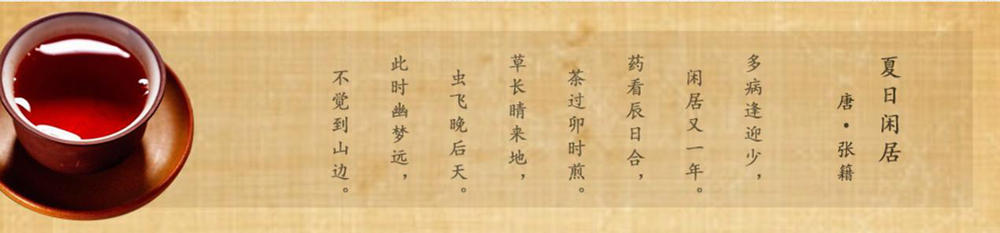

| 金 福 茶 业 |
|
| 网站首页 | 企业展示 | 产品展示 | 茶业文化 | 联系我们 |
|  | |||
|
|||
云南金福茶业有限公司 云南普洱金福茶厂 总公司地址：昆明市金实小区云南茶叶批发市场一期二栋206号 生产基地地址：普洱市木乃河工业园区
全国统一免费电话：0871-68886650 销售专线：0871-65718007 技术支持：天人网络
|
|||||||
|
|||||||
|
|||||||
云南金福茶业有限公司 云南普洱金福茶厂 总公司地址：昆明市金实小区云南茶叶批发市场一期二栋206号 生产基地地址：普洱市木乃河工业园区 |